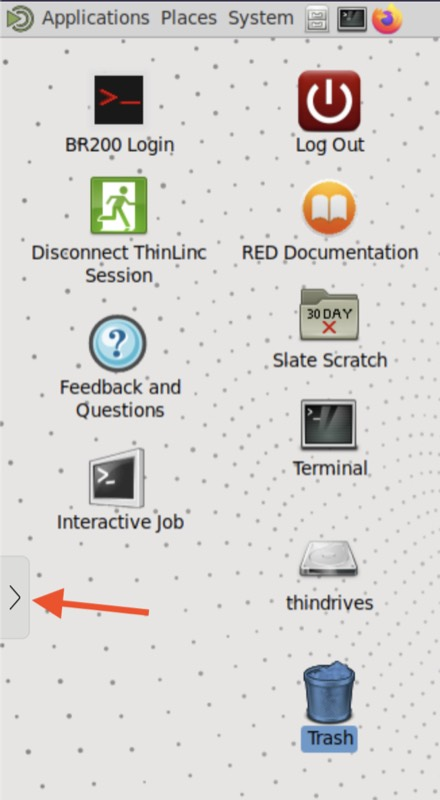
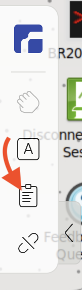
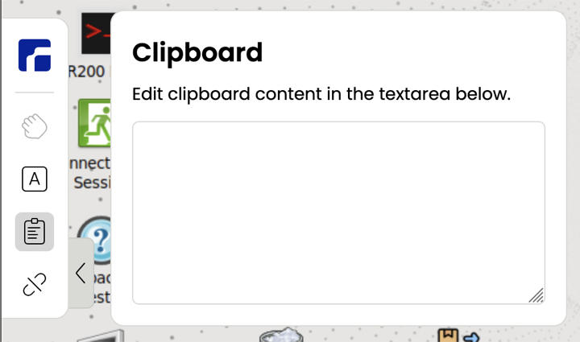

Your first cluster job: counting bigrams
You will ask an AI agent (pi) to write a small Python program and a batch script. Then you check the script, submit the job to Quartz yourself, watch it run, and read the results. It takes about 30 minutes, at your own pace.
When you finish, you can
- read a SLURM batch script and say what each
#SBATCHline asks for - submit, monitor and cancel a job
- find and check the job's output
- explain why work runs through a scheduler on compute nodes, not on the login machine
- say what a bigram count is, and read the top bigrams
You need
- pi installed on Quartz and answering (connected to your LLM service with your API key)
- access to the workshop allocation,
c02318, or an allocation of your own - a terminal on Quartz, for example in the Research Desktop
Stuck at any point? Jump to Get help or email cc155@iu.edu.
- Check your setup 5 min
- What the job does 3 min
- Get the prompt and edit it 5 min
- Start pi and give it the prompt 5 min
- Read the batch script 5 min
- Dry run, then submit 3 min
- Watch your job 2 to 5 min
- Read your results 3 min
- Reflect and go further optional
Check your setup
5 min- Open a terminal on Quartz.
- Start pi:
pi - Switch to the Gemma model. Inside pi, type this and press Enter:
Choose the Gemma model from the list (arrow keys, then Enter). We recommend Gemma for this exercise: pi's default model may follow the prompt less reliably. The model's name is shown at the bottom of pi's screen, so you can check which one is selected. pi forgets the choice when it restarts, and when you type/model/new, so you will repeat this in step 3. - Type a simple question and press Enter, for example
Say hello in one sentence. - When pi answers, leave it by typing
/quitand pressing Enter.
- Simplest: open this page in Firefox inside the Research Desktop. The Copy buttons then copy straight into the desktop, and you paste into a terminal with Ctrl+Shift+V (plain Ctrl+V doesn't work in a terminal).
- ThinLinc client app: Ctrl+Shift+V pastes into the terminal.
- Web version of the Research Desktop (in a browser tab): your computer's clipboard isn't shared automatically. Use the clipboard panel to send text to the desktop (steps below).
Web version: how to paste text into the desktop (with screenshots)
- Click the small > tab on the left edge of the browser window to reveal the control bar.
- In the control bar, click the clipboard icon.
- A Clipboard panel opens with a text box. On your own computer, copy the text you want (for example with a Copy button on this page, or Ctrl+C / Cmd+C), then paste it into that text box with your computer's normal paste (Ctrl+V / Cmd+V). The text is now on the Research Desktop's clipboard.
- Click in the desktop's terminal and paste with Ctrl+Shift+V, or right-click and choose Paste, or use the terminal's Edit menu.

tab on the left edge of the window">

Have these three values ready (you will use them in step 2)
Click a value to copy it.
<PATH> the corpus folder | |
<PARTITION> the queue | (or debug if general is very busy) |
<ACCOUNT> the allocation | (or your own allocation) |
What the job does
3 minA bigram is a pair of consecutive words. Counting bigrams shows which phrases a text uses most, and bigram counts are the basis of simple language models.
the cat sat on the mat and the cat slept has 10 words, so 9 bigrams (8 distinct):
Your job reads 3,999 passages (about 5,000 words each) from Project Gutenberg books, 19.5 million words in all. It counts the word pairs inside each passage, adds them up, prints the 20 most frequent bigrams, and saves the top 1,000 to a file.
About the data. The corpus was downloaded from Project Gutenberg books and cleaned ahead of time (the Gutenberg headers and license text removed), so you don't have to do that.
It lives in a folder under /N/project/, which is IU's Slate-Project storage. Slate-Project is the preferred filesystem for computing on Quartz,
and it is also a good place to keep your own research data, because it is shared between you, your advisor and anyone on your team.
The linguistics is simple on purpose. The point is the workflow: request resources, check the script, submit, wait, read the results.
Get the prompt and edit it
5 minThe prompt is a text file that tells pi what to write. You will save a copy in your working folder, fill in three values, and remove a short header.
2a. Make a working folder and save the prompt in it as prompt.txt
This folder is where pi will work and write its files. In a terminal, one command makes the folder and downloads the prompt into it:
mkdir -p ~/bigrams && cd ~/bigrams
wget -O prompt.txt https://raw.githubusercontent.com/chunlchan/ling-hpc-workshop/main/AGENT_PROMPT.mdPrefer your browser? Run just the mkdir line, then
open the prompt ↗,
press Ctrl+S, and save it as prompt.txt inside the bigrams folder.
2b. Open it in a text editor
Use any editor you like. In a terminal, nano works everywhere:
nano ~/bigrams/prompt.txtIn nano: arrow keys move, Ctrl+K deletes the current line, Ctrl+O then Enter saves, Ctrl+X exits.
2c. Replace the three values
In the "My settings" section, replace each <...> including the angle brackets with the values from step 0:
<PATH>, <PARTITION> and <ACCOUNT>. (You can leave the text in parentheses after each one.)
2d. Delete the header
At the top of the file is a short "How to use this" header. Delete everything above the --- line, and the --- line itself. Keep everything below it.
grep -n -E '<PATH>|<PARTITION>|<ACCOUNT>' ~/bigrams/prompt.txt
head -3 ~/bigrams/prompt.txtI'm new to HPC. Please help me write my first job.... If you still see
a title or "How to use this", delete the header.
Start pi and give it the prompt
5 min- Start pi in your working folder, so the files pi writes land there:
cd ~/bigrams pi - Select the Gemma model. Type
/model, press Enter, and choose Gemma with the arrow keys. Check the model name at the bottom of pi's screen. pi goes back to its default model every time it starts and every time you type/new, so do this every time, before you send anything. - Send pi this message. pi reads
prompt.txtitself, so there is nothing to copy out of the file:
Type it, or paste it (Ctrl+Shift+V; see the copy and paste note in step 0 if you use the web version), then press Enter.Read prompt.txt in this folder and follow its instructions exactly. I will submit the job myself, so do not run sbatch or the Python script. - Wait while pi works, usually a minute or two. It may look up Python versions with
module spider. It should write two files and then print some commands for you to type, and stop.
sbatch, srun, or python3 bigrams_serial.py,
press Esc straight away. Then type /quit, check squeue --me, and cancel anything it submitted with scancel <jobid>.
Start again from step 3, and select Gemma again. (See the cheat sheet.)sbatch run_bigrams.slurm and then stops. Leave pi with /quit, then check:
ls ~/bigrams
squeue --meprompt.txt, bigrams_serial.py and run_bigrams.slurm, and squeue --me should show no jobs yet.
Read the batch script
5 minPrint the script with line numbers:
cat -n ~/bigrams/run_bigrams.slurmWhat each part means
Your script may order the lines differently, but it should contain all of these.
| Line | What it does |
|---|---|
#SBATCH --partition=... | Which queue to wait in: general (or debug) |
#SBATCH --account=... | Which allocation is charged for the job |
#SBATCH --cpus-per-task=1 | One CPU core. This is a serial job that uses a single process |
#SBATCH --mem=4G | Memory limit. The job is killed if it needs more |
#SBATCH --time=00:10:00 | Time limit (hours:minutes:seconds). The job is killed when it runs out |
#SBATCH --output / --error | Where the log files go. %u is your username and %j is the job number |
module load python/... | Quartz provides software through modules, and a compute node starts without Python loaded |
export CORPUS_DIR=...export OUTPUT_DIR=... | Tell the program where the corpus is (read-only) and where to write its results |
python3 bigrams_serial.py | The actual work: run the program pi wrote |
Confirm your script matches what you chose
--partitionis your partition (generalordebug)--accountisc02318(or your own allocation)--cpus-per-task=1,--mem=4Gand--time=00:10:00- a
module load python/...line, and nomodule purge CORPUS_DIRis the path you put in the prompt, andOUTPUT_DIRis/N/scratch/$USER--outputand--errorpoint into/N/scratch/%u/
Test yourself
What happens if the job needs more than 10 minutes?
The scheduler stops it, andsacct reports TIMEOUT. The time limit protects the shared cluster from runaway jobs.Where will you find the job's log?
In/N/scratch/$USER/bigrams_<jobid>.out, and any errors in the matching .err file.Why does the script load Python, when you already have Python in your own terminal?
The job runs on a compute node, which starts with a clean environment. Anything the program needs has to be loaded inside the script.If something is wrong
Don't edit blindly. Start pi again in the same folder (select Gemma again with /model) and tell it exactly what to change, for example:
Please fix run_bigrams.slurm: the --account line should be c02318. Only edit the file. Do not run anything.Then read the script again. Optional: read the counting loop in cat -n ~/bigrams/bigrams_serial.py and check that it counts pairs within each line only.
#SBATCH line asks for, and every box in the checklist is ticked.Dry run, then submit
3 min5a. Dry run
A dry run asks the scheduler to check your script and the account, without creating a job:
cd ~/bigrams
sbatch --test-only run_bigrams.slurmIf all is well, you get one line like this (your numbers and times will differ):
sbatch: Job 12243972 to start at 2026-10-15T08:47:51 using 1 processors on nodes c70 in partition generalThe start time is an estimate of how long you might wait in the queue. No job exists yet: squeue --me still shows nothing.
If something is wrong with the account or partition, you get an error instead, such as:
allocation failure: Invalid account or account/partition combination specifiedIn that case, fix the --account or --partition line (see step 4) and dry-run again.
5b. Submit
sbatch run_bigrams.slurmSubmitted batch job 12243986Write down the job number. You will use it in the next steps.
sbatch --mail-type=END,FAIL --mail-user=$USER@iu.edu run_bigrams.slurmSubmitted batch job ... and wrote down the number.Watch your job
2 to 5 minInstead of retyping squeue --me, let the terminal refresh it for you every 5 seconds:
watch -n 5 squeue --meWhat you will see
Every 5.0s: squeue --me Thu Oct 15 08:52:10 2026
JOBID PARTITION NAME USER ST TIME NODES NODELIST(REASON)
12243986 general bigrams cc155 R 0:23 1 c70- The screen clears and redraws every 5 seconds. Between updates, nothing appears to move, so be patient.
STshows the state:PDmeans waiting in the queue,Rmeans running. TheTIMEcounter goes up while it runs.- When the job finishes, its row disappears, leaving only the header line. That means it is done.
- Press Ctrl+C to stop watching. (Without
watch,squeue --me -i 5does the same.)
A run takes anywhere from about 15 seconds to a minute once it starts. The wait before it starts depends on how busy the cluster is, from seconds to several minutes.
Confirm how it ended
The job vanishing from squeue doesn't tell you whether it worked. Ask the scheduler (use your job number):
sacct -j <jobid> --format=JobID,State,Elapsed,ExitCode| State | Meaning |
|---|---|
PENDING / PD | Waiting in the queue |
RUNNING / R | Running on a compute node |
COMPLETED | Finished normally (exit code 0:0) |
FAILED | The program stopped with an error. Read the .err file |
TIMEOUT | It ran past its --time limit |
OUT_OF_MEMORY | It needed more than its --mem limit (sacct may show it as OUT_OF_ME+) |
CANCELLED | Someone (maybe you) cancelled it (shown as CANCELLED+ or CANCELLED by ...) |
squeue --me: Priority or Resources just means the cluster is busy. If you have waited more than about 10 minutes,
cancel and try the debug partition (command-line options override the script):
scancel <jobid>
sbatch --partition=debug run_bigrams.slurmsacct shows COMPLETED with exit code 0:0.Read your results
3 minYour results are in your scratch folder:
ls /N/scratch/$USERRead the log (use your job number):
cat /N/scratch/$USER/bigrams_<jobid>.outLook at the top of the saved table, and check that the error file is empty. (If you used Plan B, the table is called bigram_counts_serial.tsv.)
head -20 /N/scratch/$USER/bigram_counts.tsv
cat /N/scratch/$USER/bigrams_<jobid>.errDocuments (lines): 3,999
Total bigrams: 19,500,939
Distinct bigrams: 5,306,726
Most frequent: "of the" (177,785 times)
Runtime: about 15 to 60 seconds (it varies)What if my numbers are different?
| What you see | Likely cause |
|---|---|
| Total near 19,504,898 (about 4,000 too high) | The program counted pairs across the line boundaries. Each line is a separate document, so pairs must stay within a line. Ask pi to fix bigrams_serial.py and run again. |
| Fewer than 3,999 documents | It didn't read all the files. Check CORPUS_DIR and that all 40 files are there. |
| Documents or total is 0, or "no .txt files found" | Wrong CORPUS_DIR. Check it with ls. |
Reflect and go further
optionalWhat you just did
You wrote a request for resources (a batch script), checked it, handed it to a scheduler, and collected the results. The same pattern scales up to much bigger jobs: only the numbers in the #SBATCH lines change.
Questions to think about
- Look at the 20 most frequent bigrams. What kinds of words do they contain? What would you want to filter out to find more interesting phrases?
- The program splits words on spaces, so
end.andendcount as different words. How would that change your results, and how would you fix it? - What would change if the corpus were poetry, or a set of legal documents?
Try something else (each one is optional)
- Break it on purpose. Run the job with far too little memory (a command-line option overrides the script):
It fails within seconds. Checksbatch --mem=50M run_bigrams.slurmsacct(the state isOUT_OF_ME+, with exit code0:125) and read the.errfile in/N/scratch/$USER: it says the program wasKilledby anoom_killevent. That is how a memory limit shows up, and it is the message to look for when a job dies early. - Count trigrams (three-word sequences). Start pi in
~/bigramsand ask it to write a new program and batch script. Remember to read the new script before you submit it. - Ask pi for a parallel version that uses several CPU cores, and compare the runtimes. More cores are not always proportionally faster. Why might that be?
- Open the results table (
/N/scratch/$USER/bigram_counts.tsv) in a spreadsheet.
Cheat sheet
pi: stopping and leaving
| Do this | To |
|---|---|
| Esc | Interrupt pi while it is working |
| Ctrl+C | Clear what you typed in pi's input box (this does not exit pi) |
/model then Enter | Choose which model pi uses (pick Gemma for this exercise) |
/new then Enter | Start a fresh conversation. This also resets the model to pi's default, so run /model and pick Gemma again |
/quit or /exit then Enter | Leave pi cleanly |
| Ctrl+D | Leave pi, when the input box is empty |
These are pi's default keys and can differ between pi versions.
The terminal
| Do this | To |
|---|---|
| Ctrl+C | Stop a command that is running, such as watch |
| Ctrl+Shift+V | Paste into the terminal (plain Ctrl+V doesn't work there). In the web version of the Research Desktop, use the left-hand drawer |
cd ~/bigrams | Go to your working folder |
clear | Clear the screen |
Jobs
| Command | What it does |
|---|---|
sbatch --test-only script | Dry run: check a script without submitting |
sbatch script | Submit a job (prints the job number) |
squeue --me | List your waiting and running jobs |
watch -n 5 squeue --me | The same, refreshed every 5 seconds (Ctrl+C to stop) |
sacct -j <jobid> --format=JobID,State,Elapsed,ExitCode | How a job ended |
scancel <jobid> | Cancel one job |
scancel -u $USER | Cancel all your jobs (use with care) |
ls /N/scratch/$USER | See your output files |
Get help
Nobody is watching over your shoulder, so here is how to get unstuck.
Common problems
| What you see | What to do |
|---|---|
| pi doesn't start or doesn't answer | Usually the API key or network setup. Email me. |
pi says it can't find prompt.txt | Start pi from the working folder (cd ~/bigrams, then pi), and check that ls ~/bigrams lists prompt.txt. |
| The step 2 check prints lines | Placeholders are still in prompt.txt. Replace them, including the angle brackets. |
pi ran sbatch or the program itself | Press Esc, /quit, squeue --me, scancel <jobid>, then start step 3 again. Check that the Gemma model is selected (/model): it resets to the default on a restart or /new. |
Invalid account or account/partition combination | Fix the --account or --partition line, then dry-run again. |
The job waits a long time (PD) | The cluster is busy. See "Waiting a long time?" in step 6. |
python: command not found | The script is missing a module load python/... line. Ask pi to add it. |
module load says a module doesn't exist | Run module spider python and choose a version that is listed. Ask pi to fix the line. |
| "no .txt files found", or 0 documents | Wrong CORPUS_DIR. Check it with ls, or use the download below. |
FAILED, TIMEOUT or OUT_OF_MEMORY | Read the .err file in /N/scratch/$USER, then ask pi to fix the script. |
Email me
Write to cc155@iu.edu. Say which step you are on and what you expected, and paste the error message. Then run this one command, which collects what I need into a single file, and paste or attach ~/help_info.txt:
{ echo "== when"; date; echo; echo "== my jobs now"; squeue --me; echo; echo "== recent jobs"; sacct -X --starttime=today --format=JobID,JobName,Partition,Account,State,Elapsed,ExitCode; echo; echo "== batch script"; cat ~/bigrams/run_bigrams.slurm; echo; echo "== newest error file"; cat "$(ls -t /N/scratch/$USER/bigrams_*.err 2>/dev/null | head -1)" 2>&1; echo; echo "== newest output file"; cat "$(ls -t /N/scratch/$USER/bigrams_*.out 2>/dev/null | head -1)" 2>&1; } > ~/help_info.txt 2>&1; echo "Saved ~/help_info.txt"It contains your job list, batch script and log files, and never your API key.
Plan B: use a known-good script
If pi's script still doesn't work after a couple of tries, use this tested pair and carry on from step 5 (it is set up for the workshop allocation and the general partition; edit the account or partition lines if yours differ):
mkdir -p ~/bigrams_planb && cd ~/bigrams_planb
wget -O bigrams_serial.py https://raw.githubusercontent.com/chunlchan/ling-hpc-workshop/main/reference/bigrams_serial.py
wget -O run_bigrams.slurm https://raw.githubusercontent.com/chunlchan/ling-hpc-workshop/main/reference/planb_run_bigrams.slurmWith Plan B, the results table is saved as bigram_counts_serial.tsv (not bigram_counts.tsv), and the log lines read "Documents (lines)" and "Finished in".
If you can't read the corpus folder
Permission denied, folder not found, or very slow? Download your own copy, then use the path it prints as the corpus folder (in the prompt, or in the script's CORPUS_DIR line):
mkdir -p ~/ling_corpus && cd ~/ling_corpus
wget https://github.com/chunlchan/ling-hpc-workshop/releases/download/2026-10-12_01/prepared_4k_concat.zip
unzip prepared_4k_concat.zip
ls prepared_4k_concat | wc -l
echo $PWD/prepared_4k_concatThe wc -l line should print 40. The last line prints the path to use.